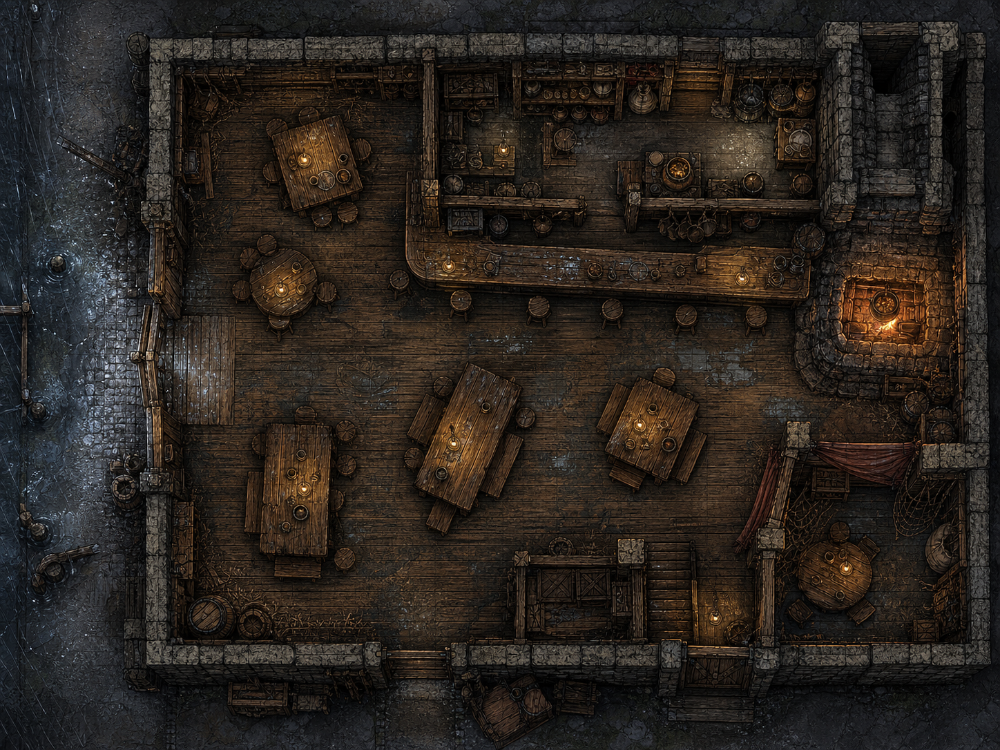

El Marino Cojo
Vista cenital del interior de la posada: calle lluviosa al oeste, a la izquierda; chimenea al este.

Crédito: Cartógrafo · Midnight Nightmares.
07 · CARTOGRAFÍA PÚBLICA
Versiones de jugador, sin claves de Director, overlays ni rutas condicionales. Solo dos mapas tienen permiso cartográfico web individual.
Vista cenital del interior de la posada: calle lluviosa al oeste, a la izquierda; chimenea al este.

Crédito: Cartógrafo · Midnight Nightmares.
Vista cenital del barrio: norte arriba, muralla al norte, Calle de Melaza al este; Consigna y puerto al oeste.

Crédito: Cartógrafo · Midnight Nightmares.